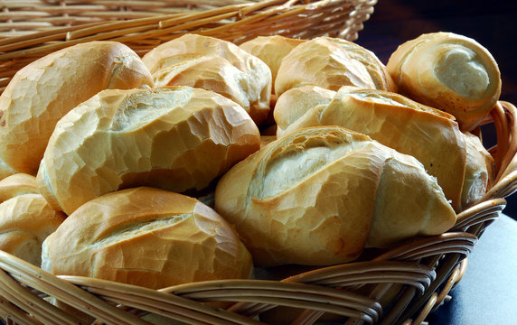

<!--Links de estilização-->
<link href="../../static/css/style.css" rel="stylesheet">
<script src="https://cdn.tailwindcss.com"></script>

<article class="grid h-full rounded-lg">
	<a href="daniely.html" target="_blank" rel="noopener noreferrer">
		
		<figcaption class="flex flex-col gap-3 p-3">
			<h5 class="flex-grow text-xl font-bold">Pão Francês</h5>
			<p class="flex-grow w-full h-56 overflow-y-scroll">
				A história do pão é antiga. Ele teria surgido há mais de 6 mil anos, quando os egípcios descobriram a
				fermentação do trigo. Ali ele era considerado um alimento básico e era um símbolo de poder. Os pães
				preparados
				com trigo de qualidade superior eram destinados apenas aos ricos
			</p>
			<p class="flex-grow"><small class="flex-grow text-gray-600">21 de Setembro de 2023</small></p>
			<div class="flex flex-grow w-full gap-3 px-4 py-2 border rounded shadow-sm full">
				
				<p class="my-auto"><strong>Daniely Lauro</strong></p>
			</div>
			</div>
		</figcaption>
	</a>
</article>